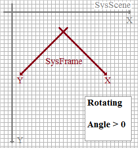
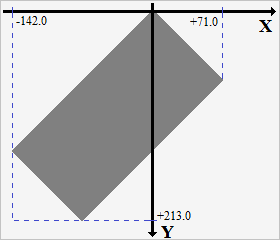

Unit: DeLaFitsGraphics
Type: method
Visibility: public
Member Of: TGraphicGeom
function Rot(const Angle: Double; const pX, pY: Double): TGraphicGeom;
overload;
function Rot(const Angle: Double; const P: TPnt): TGraphicGeom;
overload;
function Rot(const Angle: Double; const P: TDesignPoint): TGraphicGeom;
overload;
Description:
The rotating. Method rotates the coordinate system of frame SysFrame relative to the coordinate system of scenes SysScene along the X axis and Y, see Coordinate system.

Parameter Angle - the angle of rotation, is specified in degrees [0.0° ... 360°).
The angle of rotation can be greater than 360°.
- Angle > 0.0, rotation clockwise;
- Angle < 0.0, rotation counter-clockwise;
According to the rules of affine transformations rotation occurs relative to some point. Point of rotating can be specified explicitly (pX, pY) or by means TDesignPoint.
rotation occurs relative to some point. Point of rotating can be specified explicitly (pX, pY) or by means TDesignPoint.
TDesignPoint (declaration into unit DeLaFitsCommon) defines the point of full region of the graphic image of data, at coordinate system SysScene:
- xy00 - point (0.0; 0.0);
- xyLT - point of top left pixel of frame;
- xyRT - point of top right pixel of frame;
- xyRB - point of bottom right pixel of frame;
- xyLB - point of bottom left pixel of frame;
- xyCC - center point of frame;
The method returns a reference to TGraphicGeom, to be able to build a structure:
Fit.GraphicGeom.Clr.Rot(Angle, xy00).Scl(sX, sY, xy00) etc.
Code Sample:
Input
00 01 02 03 04 05 06 07 … $ |
header fragment SIMPLE = T / conforms to FITS standard BITPIX = 16 / number of bits per data value NAXIS = 2 / number of axes NAXIS1 = 100 / length of first axis NAXIS2 = 200 / length of second axis BSCALE = 1.0 / data scaling factor BZERO = 0.0 / data offset END … data fragment 00 65 00 66 00 67 00 68 00 69 00 6A 00 6B .. |
var
Fit: TFitsGraphic;
R0, R1: TRgn;
begin
// open file for read
Fit := TFitsGraphic.CreateJoin(TFileStream.Create('some.fit', cFileRead));
// SysScene. Full region of the graphic image of data: initial
R0 := Fit.GraphicRgn;
// Rotation SysFrame relative to SysScene: Angle = 45°, at (0.0; 0.0)
// rotation clockwise
Fit.GraphicGeom.Rot(45, xy00);
// SysScene. Full region of the graphic image of data: after rotation
R1 := Fit.GraphicRgn;
// ... some code
// free
Fit.Stream.Free;
Fit.Free;
end;
Output
// SysScene. Full region of the graphic image of data: initial
R0.X1 = 0;
R0.Y1 = 0;
R0.Width = 100;
R0.Height = 200;
// SysScene. Full region of the graphic image of data: after rotation
R1.X1 = -142;
R1.Y1 = 0;
R1.Width = 213;
R1.Height = 213;

See Also:
—
Created with the Personal Edition of HelpNDoc: Generate EPub eBooks with ease
Copyright © 2013-2016, Evgeniy Dikov
Support: delafits.library@gmail.com
Sources: https://github.com/felleroff/delafits